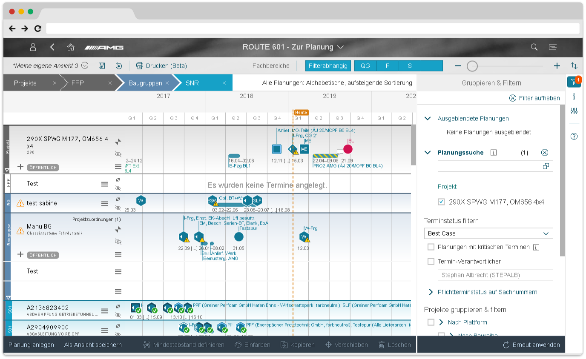
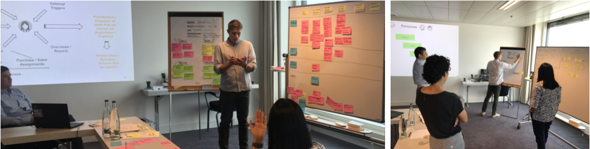
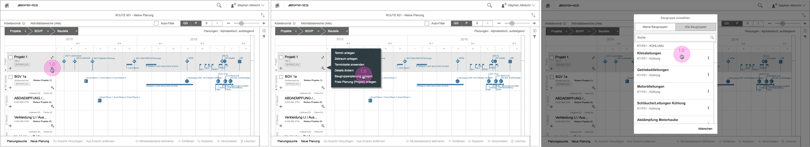
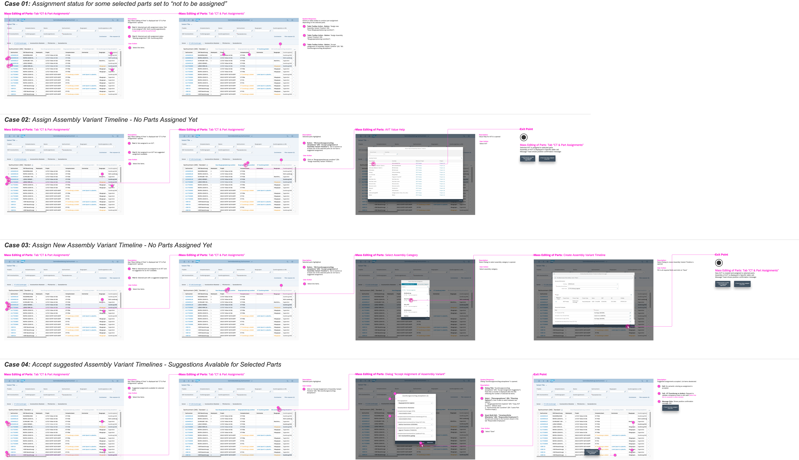
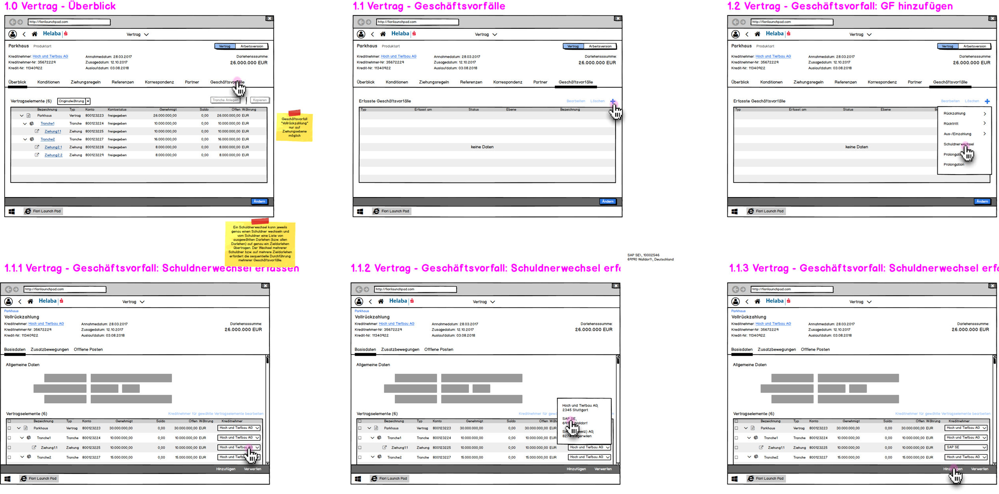
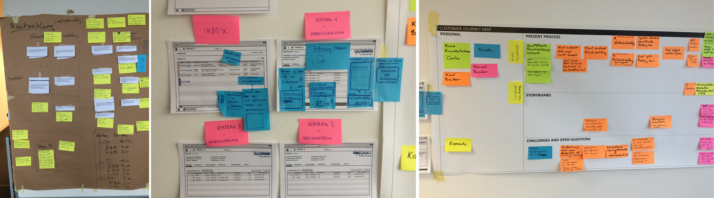
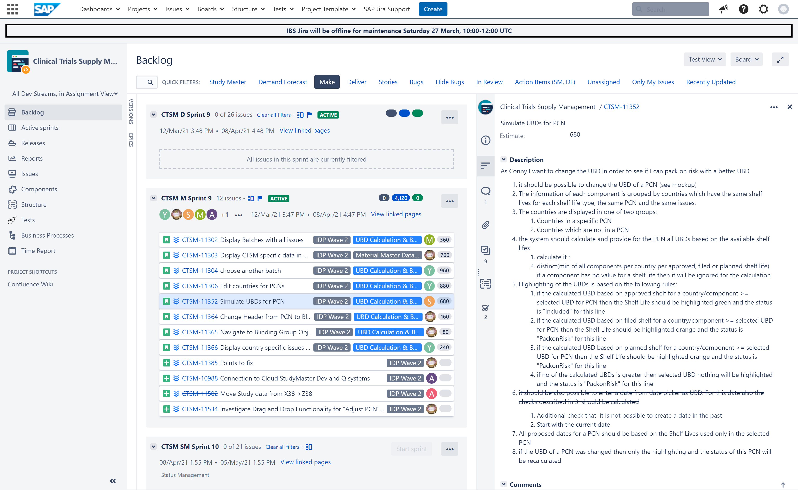
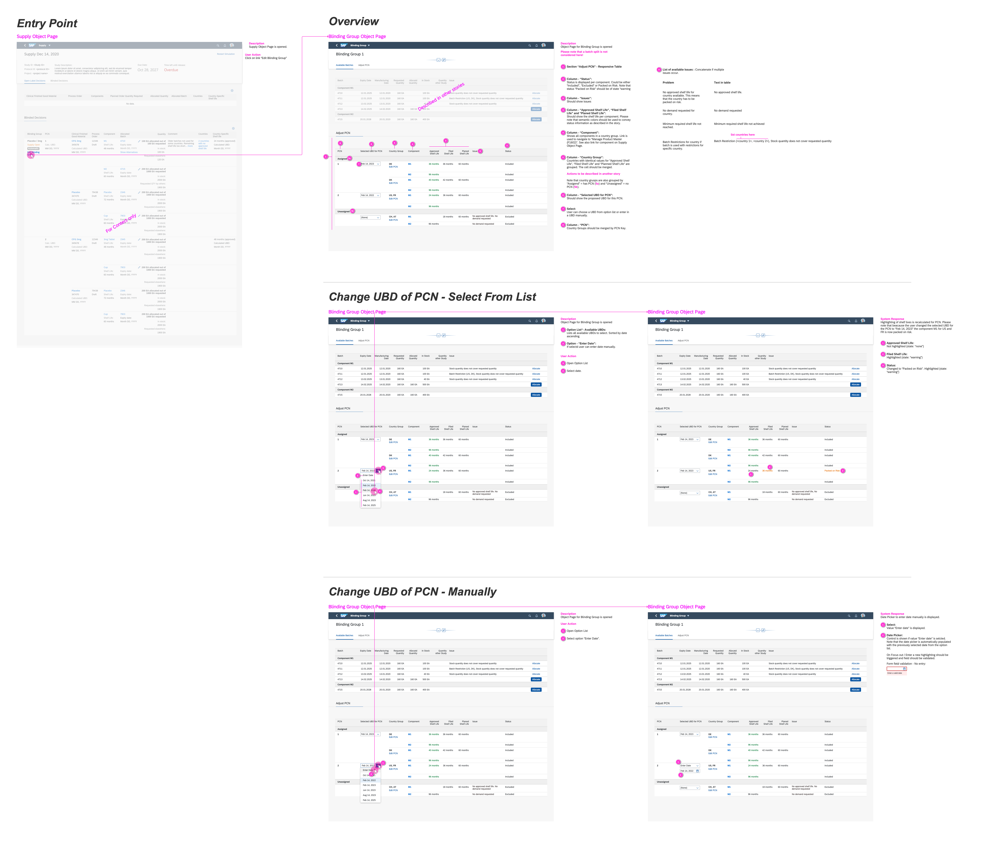

Focus Area Logistics
Daimler AMG
AMG was looking for a solution to increase transparency during the production preparation phase to allow defect detection at an early stage before the production process itself. I helped IBSO to create a software solution enabling AMG to deliver a larger amount of customized vehicles within a shorter time-period while tracking the quality of the products.
Core Team:
Sabine Kirsch (TPO), Klaus Borkenstein (PL), Franziska Dittmar (PL), Jessica
Feurer (PL), Ralf Geiger (UI5 Architect), Thomas Marz (UI5 Architect), Lisa Voshage (UX
Designer)

AMG
From rough demands
to early design concept
Planned and conducted workshops with the client's business' stakeholders and selected users in order to define preliminary user stories.
My Tasks:


AMG
Design Concept and Validation
Based on the initial user stories first design concepts were creaetd in order to validate user needs and ideas with team members and end-users via prototypes of various detail levels.
My Tasks:


AMG
Starting the sprint
Design solution were finalised together with Architects and PO. UX concepts and user stories were created and enhanced with test cases to communicate the system behaviour for all team members.
My Tasks:

IBSO: Focus Area Finance
S/4HANA Banking for complex loans
S/4HANA-based solution featuring 24 new Fiori Apps tightly integrated with SAP Loans Management to help banks keep track of complex loan packages. The solution supports the complete lifecycle of the structured finance scenario with a central workplace to manage the core activities related to the set up and maintenance of structure and syndicated financings.
Core Team:
Marcel Fechter (PO), Thomas Marz( UI5
Architect), Dr. Andreas Gebauer (PL), Mark Ackermann (CML Expert), Christian Frankenberg (UX
Designer)

S/4HANA Banking for complex loans
Turn Vision and Scope
into Backlog Items
Validating user stories via wokshop sessions with client's business owners, consultants and end-users.
My Tasks:


S/4HANA Banking for complex loans
Deliver Sprints to Customer
I supported the dev team in Bangalore both with UX Concepts for User Stories and explanations in regards to the various topics documented in the vision and scope document. I prepared and conducted several design gates for several new FIORI Apps.
My Tasks:

IBSO: Focus Area Life Sciences
CTSM - Clinical Trial Supply Management
Enable SAP S/4HANA to deal not only with commercial supplies but also address the specific blinding/randomization needs for clinical trials to enable demand forecast, manufacturing, labeling, and shipments of clinical trial materials. I am responsible for the UX Design of the "Make" stream dealing with specialized medication kit packaging and clinical trial labeling, blinding & serialization.
Core Team: Sabine Kirsch (CPO), Sebastian Jakubik (PL), Lisa Voshage (UX Design)

CTSM - Clinical Trial Supply Management
Translate and Validate Key Design Elements
Refine Key Design Elements with users of different roles across the industry via Prototypes and Sketches in order to find and test ideas.
My Tasks:


CTSM - Clinical Trial Supply Management
Prepare Sprints for external Development Team
I am responsible for the delivery of the agreed scope for each sprint from a UX perspective. I am documenting the UX Concept and I am creating User Stories in order to support the external development team on behalf of SAP IBSO.
My Tasks:

